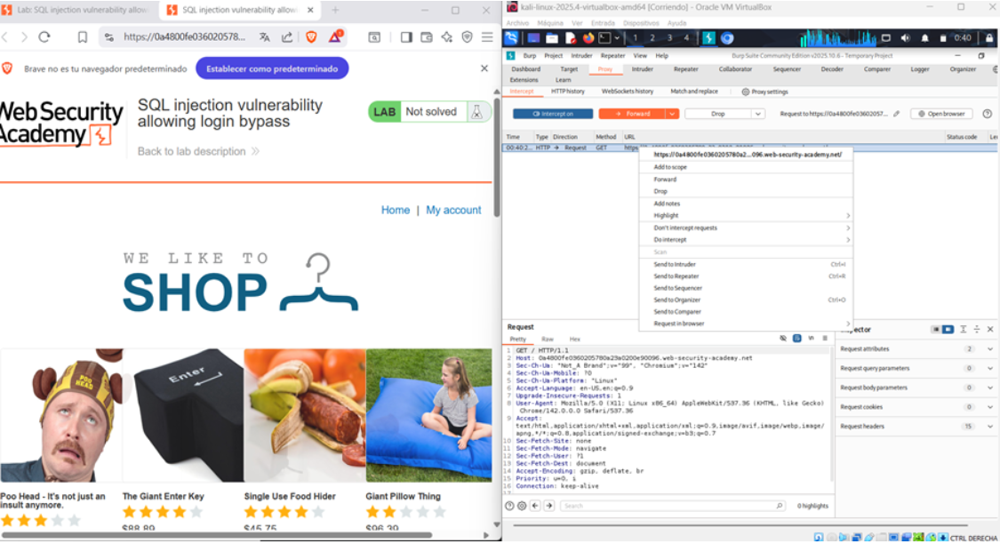
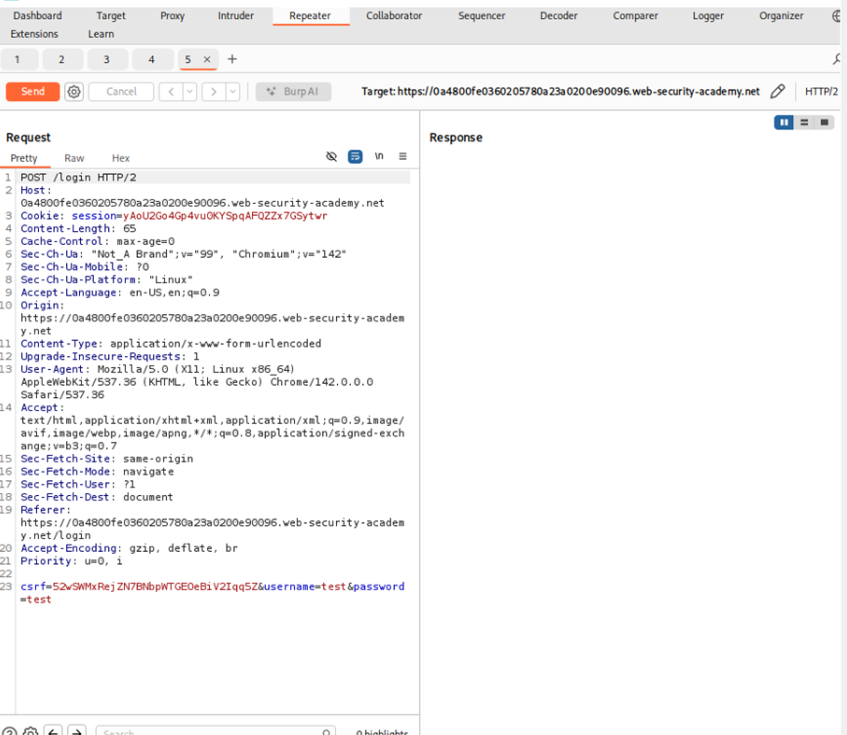
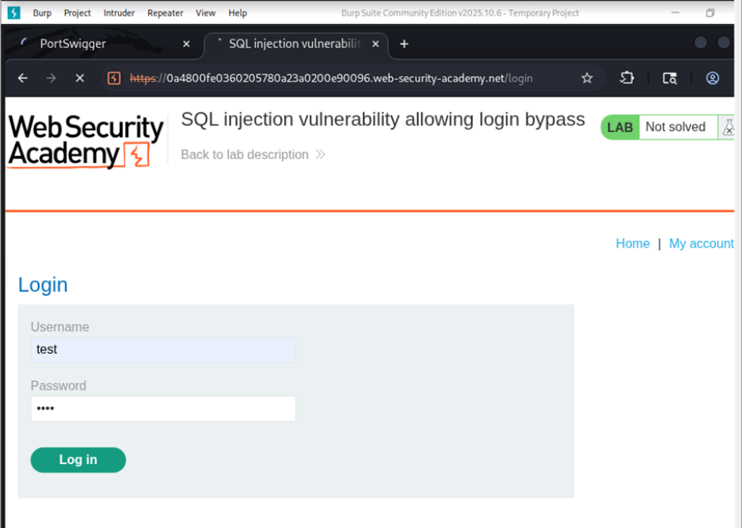
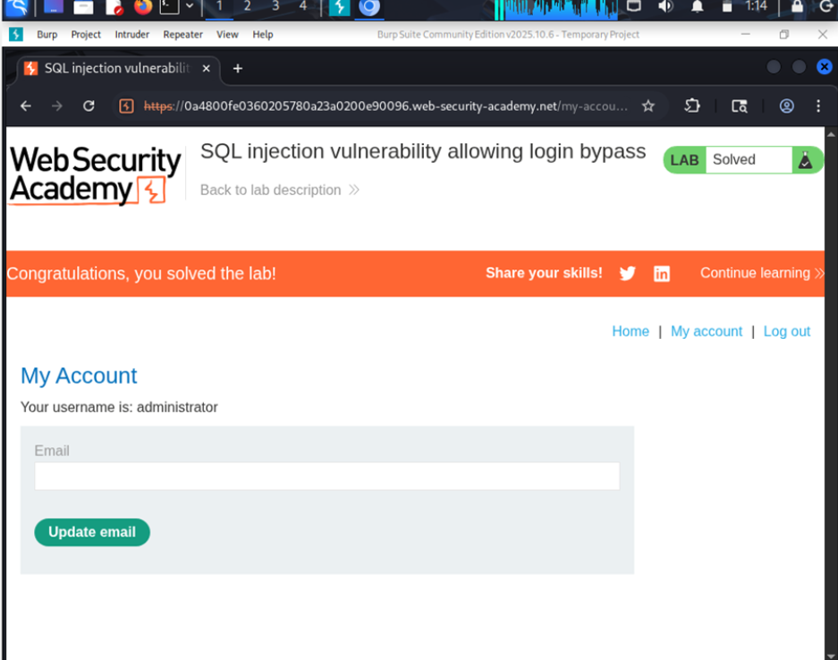

← Volver
← Volver

CNO V - Seguridad Informática
Apprentice
SQL Injection clásica (Bypass de autenticación)
Evitar el mecanismo de autenticación e iniciar sesión como usuario administrador sin conocer la contraseña.
La vulnerabilidad se produce porque la consulta de autenticación es construida concatenando directamente los valores introducidos en los campos de usuario y contraseña dentro de la cláusula WHERE. Esta práctica permite que la entrada del usuario modifique la evaluación lógica de la expresión booleana utilizada para validar credenciales. Al no emplearse consultas preparadas ni validación adecuada, la aplicación queda expuesta a manipulaciones que pueden alterar completamente el flujo de autenticación.
username y password.Acceso al laboratorio:

Acceso al apartado Gifts

Request interceptado

Payload utilizado

Confirmación

administrator' - - El payload empleado introduce una condición lógica que siempre se evalúa como verdadera dentro de la cláusula WHERE, anulando la validación real de la contraseña almacenada en la base de datos. Al cerrar la cadena original y comentar el resto de la instrucción SQL, se evita cualquier error sintáctico y se logra que la consulta resultante sea procesada correctamente por el motor de base de datos. Esta técnica explota directamente la lógica booleana de la autenticación para obtener acceso no autorizado.
La prevención exige el uso de consultas preparadas que impidan que los datos del usuario sean interpretados como código SQL ejecutable. Además, las contraseñas deben almacenarse utilizando algoritmos de hash seguros y nunca en texto plano. Es recomendable implementar controles adicionales como limitación de intentos de acceso, monitoreo de actividad sospechosa y validación estricta de entradas para reforzar la seguridad del proceso de autenticación.